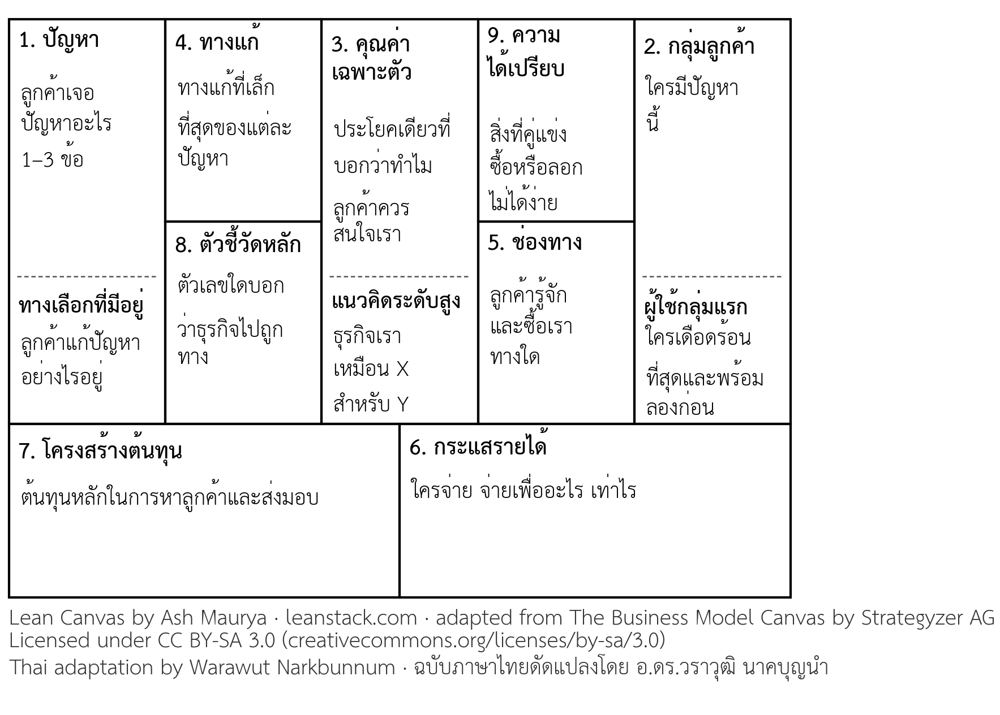
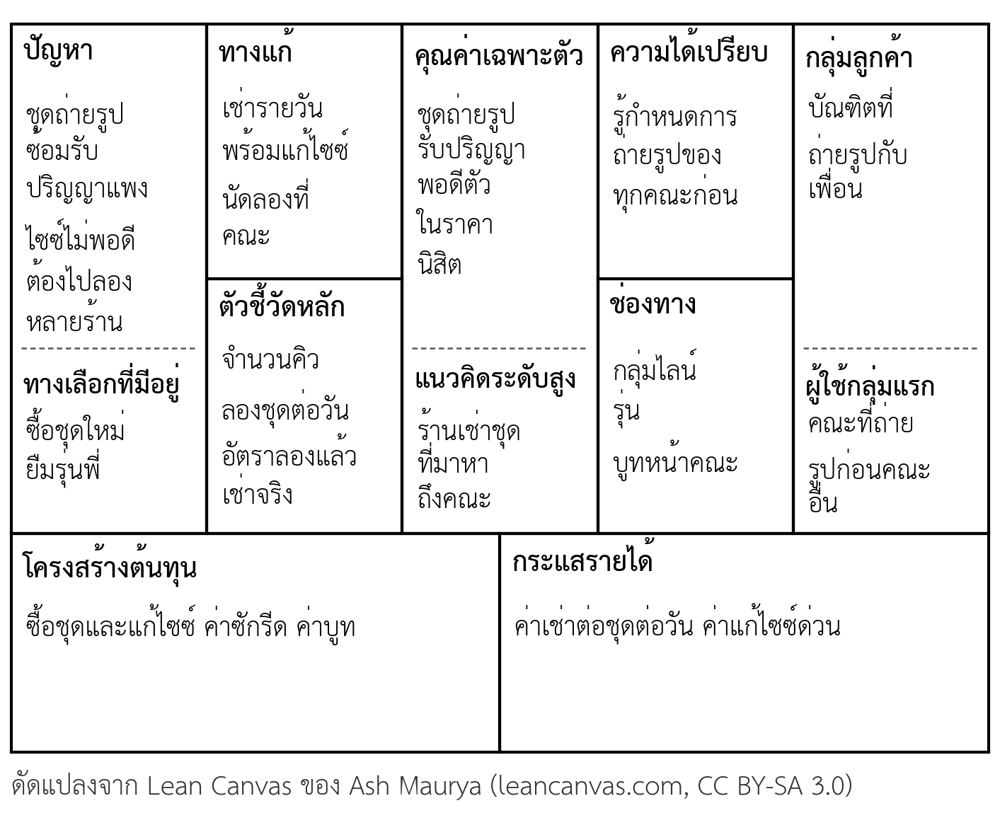

บทที่ 3 แม่แบบโมเดลธุรกิจ Lean Canvas
เมื่อศึกษาบทนี้จบแล้ว นิสิตสามารถ
- อธิบายเหตุผลที่ธุรกิจใหม่ใช้โมเดลธุรกิจหน้าเดียวในระยะเริ่มต้นแทนแผนธุรกิจฉบับเต็มได้
- ระบุองค์ประกอบ 9 ช่องของ Lean Canvas คำถามหลัก และลำดับการเขียนของแต่ละช่องได้
- เปรียบเทียบ Lean Canvas กับ Business Model Canvas ได้
- เขียนช่องปัญหา ทางเลือกที่มีอยู่ กลุ่มลูกค้า และผู้ใช้กลุ่มแรก จากผลงานกลุ่มครั้งที่ 1 ของกลุ่มได้
- เขียนคุณค่าเฉพาะตัวเป็นประโยคเดียว และจำแนกความได้เปรียบที่ลอกเลียนยากออกจากจุดเด่นที่คู่แข่งลอกได้
- ใช้ความเสี่ยง 3 ด้านระบุข้อสมมติที่ต้องทดสอบก่อนใน Lean Canvas ของกลุ่มได้
- จัดทำ Lean Canvas ฉบับร่างของกลุ่มได้ (กิจกรรมท้ายบท)
ความนำ
เมื่อจบบทที่ 2 แต่ละกลุ่มมีไอเดียหนึ่งไอเดียที่ผ่านการประเมินด้วยเกณฑ์ 5 ด้าน พร้อมข้อความปัญหาและหลักฐานเบื้องต้น คำถามต่อมาคือไอเดียนี้จะกลายเป็นธุรกิจได้อย่างไร ใครจะเป็นลูกค้ากลุ่มแรก ลูกค้าจะรู้จักธุรกิจทางใด จะจ่ายเงินเท่าไร และทีมต้องใช้ต้นทุนอะไรบ้าง คำตอบรวมของคำถามเหล่านี้คือ โมเดลธุรกิจ (Business model) ซึ่งอธิบายว่าธุรกิจสร้างคุณค่า ส่งมอบคุณค่า และได้รับคุณค่ากลับมาอย่างไร (Osterwalder & Pigneur, 2010)
ในระยะเริ่มต้น ผู้ประกอบการยังไม่รู้คำตอบเหล่านี้แน่ชัด การเขียนแผนธุรกิจหลายสิบหน้าจึงมักเป็นการเขียนสิ่งที่ยังไม่มีใครพิสูจน์ บทนี้แนะนำ Lean Canvas ซึ่งเป็นแม่แบบโมเดลธุรกิจหน้าเดียวที่ออกแบบมาสำหรับธุรกิจใหม่โดยเฉพาะ Lean Canvas ช่วยให้ทีมเขียนโมเดลธุรกิจฉบับแรกได้ในเวลาไม่นาน มองเห็นส่วนที่ยังไม่รู้ และรู้ว่าต้องทดสอบอะไรก่อน
บทนี้เริ่มจากเหตุผลที่ธุรกิจใหม่ควรใช้โมเดลหน้าเดียว ต่อด้วยโครงสร้าง 9 ช่องของ Lean Canvas และความต่างจาก Business Model Canvas จากนั้นอธิบายวิธีเขียนแต่ละช่องพร้อมตัวอย่าง และปิดด้วยแนวคิดที่สำคัญที่สุดของบท คือ Lean Canvas เป็นชุดข้อสมมติที่รอการทดสอบ ไม่ใช่คำตอบสุดท้าย ผลงานของบทนี้คือ Lean Canvas ฉบับร่างของกลุ่ม ซึ่งจะต่อยอดเป็น Business Model Canvas ในบทที่ 4 และนำเสนอรวมกันในสัปดาห์ที่ 7
3.1 ทำไมธุรกิจใหม่ต้องใช้โมเดลหน้าเดียว
ธุรกิจที่ดำเนินการอยู่แล้วรู้ว่าลูกค้าคือใคร ขายอะไรได้ และต้นทุนเท่าไร แผนธุรกิจของธุรกิจแบบนี้จึงตั้งอยู่บนข้อมูลจริงที่มีอยู่ แต่ธุรกิจใหม่ยังอยู่ในช่วงค้นหาว่าโมเดลแบบใดใช้ได้ Blank และ Dorf (2012) อธิบายว่าสตาร์ตอัปไม่ใช่บริษัทขนาดเล็ก แต่เป็นองค์กรชั่วคราวที่ออกค้นหาโมเดลธุรกิจที่ทำซ้ำได้และขยายได้ หน้าที่หลักของทีมในช่วงนี้จึงเป็นการเรียนรู้ ไม่ใช่การทำตามแผน
Maurya (2012) ชี้ว่าแผนแรกของผู้ประกอบการส่วนใหญ่ผิดในบางส่วนเสมอ และเรียกแผนแรกนั้นว่า "แผน ก" ความเสี่ยงไม่ได้อยู่ที่แผน ก ผิด แต่อยู่ที่ทีมใช้เวลาและเงินจำนวนมากไปกับแผนที่ผิดก่อนรู้ตัว โมเดลหน้าเดียวช่วยลดความเสี่ยงนี้ได้ 3 ทาง คือ เขียนได้เร็วจึงเริ่มทดสอบได้เร็ว เห็นภาพรวมทั้งธุรกิจในแผ่นเดียวจึงเห็นช่องที่ไม่เชื่อมกัน และแก้ไขได้ง่ายเมื่อผลทดสอบไม่เป็นไปตามคาด ตารางที่ 3.1 เปรียบเทียบแผนธุรกิจฉบับเต็มกับโมเดลหน้าเดียว
ตารางที่ 3.1 แผนธุรกิจฉบับเต็มเปรียบเทียบกับโมเดลธุรกิจหน้าเดียว
| ประเด็น | แผนธุรกิจฉบับเต็ม | โมเดลธุรกิจหน้าเดียว |
|---|---|---|
| ความยาว | หลายสิบหน้า | หนึ่งหน้า |
| เวลาที่ใช้เขียน | หลายสัปดาห์ | ฉบับแรก 20–30 นาที |
| เหมาะกับ | ธุรกิจที่รู้ลูกค้าและตัวเลขแล้ว หรือเมื่อขอสินเชื่อและระดมทุน | ธุรกิจใหม่ที่ยังค้นหาโมเดลที่ใช้ได้ |
| การแก้ไข | แก้ยาก ทีมมักไม่อยากแก้เพราะลงแรงมาก | แก้ได้ทุกสัปดาห์ตามผลทดสอบ |
| สิ่งที่บอก | รายละเอียดของการดำเนินงานและตัวเลขประมาณการ | ภาพรวมและข้อสมมติสำคัญที่ต้องพิสูจน์ |
| ผู้อ่านหลัก | ธนาคาร ผู้ลงทุน หน่วยงานให้ทุน | ทีมผู้ก่อตั้ง พี่เลี้ยง และลูกค้ากลุ่มแรก |
ตารางนี้ไม่ได้บอกว่าแผนธุรกิจฉบับเต็มไม่จำเป็น เมื่อทีมทดสอบจนรู้ว่าโมเดลใช้ได้แล้ว แผนฉบับเต็มยังจำเป็นสำหรับขอเงินทุนและวางระบบงาน ซึ่งนิสิตจะเห็นในบทที่ 7 ถึงบทที่ 9 ลำดับนี้ตรงกับวิธีคิดสองแบบในบทที่ 1 คือช่วงแรกใช้การคิดแบบใช้สิ่งที่มีอยู่และทดลอง ช่วงหลังจึงวางแผนล่วงหน้าอย่างละเอียด
3.2 โครงสร้าง Lean Canvas 9 ช่อง
Lean Canvas คือแม่แบบโมเดลธุรกิจหน้าเดียว 9 ช่อง ที่ Maurya (2012) ดัดแปลงจาก Business Model Canvas ของ Osterwalder และ Pigneur (2010) ให้เหมาะกับธุรกิจใหม่ที่ยังมีความไม่แน่นอนสูง ทั้งสองแม่แบบเผยแพร่ภายใต้สัญญาอนุญาต Creative Commons แบบแสดงที่มาและอนุญาตแบบเดียวกัน (CC BY-SA 3.0) จึงใช้และดัดแปลงได้เมื่อระบุที่มา ภาพที่ 3.1 แสดงโครงสร้าง 9 ช่อง พร้อมคำถามหลักและลำดับการเขียน

ครึ่งขวาของ Canvas เป็นเรื่องของลูกค้าและตลาด ครึ่งซ้ายเป็นเรื่องของสินค้าหรือบริการ คุณค่าเฉพาะตัวอยู่ตรงกลางเพราะเป็นจุดที่สองด้านมาพบกัน ส่วนแถวล่างเป็นเรื่องเงิน คือต้นทุนและรายได้ ตารางที่ 3.2 สรุปความหมายและคำถามหลักของแต่ละช่อง
ตารางที่ 3.2 ช่องของ Lean Canvas คำถามหลัก และลำดับการเขียน
| ลำดับ | ช่อง | คำถามหลัก | สิ่งที่เขียนในช่อง |
|---|---|---|---|
| 1 | ปัญหา (Problem) | ลูกค้าเจอปัญหาสำคัญอะไร | ปัญหา 1–3 ข้อ และทางเลือกที่ลูกค้าใช้อยู่ |
| 2 | กลุ่มลูกค้า (Customer segments) | ใครมีปัญหานี้ | กลุ่มลูกค้าเป้าหมาย และผู้ใช้กลุ่มแรก |
| 3 | คุณค่าเฉพาะตัว (Unique value proposition) | ทำไมลูกค้าควรสนใจเรามากกว่าทางเลือกเดิม | ประโยคเดียวที่ชัด และแนวคิดระดับสูง |
| 4 | ทางแก้ (Solution) | ทางแก้ที่เล็กที่สุดของแต่ละปัญหาคืออะไร | คุณสมบัติหลัก 1–3 อย่าง |
| 5 | ช่องทาง (Channels) | ลูกค้ารู้จักและซื้อเราทางใด | ช่องทางเข้าถึงลูกค้า |
| 6 | กระแสรายได้ (Revenue streams) | ใครจ่าย จ่ายเพื่ออะไร เท่าไร | รูปแบบรายได้และราคา |
| 7 | โครงสร้างต้นทุน (Cost structure) | ต้องใช้เงินกับอะไร | ต้นทุนหลักในการสร้าง หาลูกค้า และส่งมอบ |
| 8 | ตัวชี้วัดหลัก (Key metrics) | ตัวเลขใดบอกว่าธุรกิจไปถูกทาง | ตัวชี้วัด 1–3 ตัว |
| 9 | ความได้เปรียบที่ลอกเลียนยาก (Unfair advantage) | อะไรที่คู่แข่งซื้อหรือลอกไม่ได้ง่าย | ข้อได้เปรียบที่มีจริง หรือเว้นว่างไว้ก่อน |
ลำดับการเขียนเริ่มจากปัญหาและลูกค้า เพราะทุกช่องที่ตามมาขึ้นกับสองช่องนี้ ถ้าปัญหาหรือลูกค้าผิด ช่องอื่นจะผิดตามทั้งหมด ช่องความได้เปรียบเขียนเป็นช่องสุดท้าย เพราะธุรกิจใหม่ส่วนใหญ่ยังไม่มีความได้เปรียบที่แท้จริง และการเว้นว่างไว้ซื่อตรงกว่าการเขียนสิ่งที่ไม่ใช่ความได้เปรียบ
3.2.1 Lean Canvas ต่างจาก Business Model Canvas อย่างไร
Business Model Canvas เหมาะกับการอธิบายโมเดลของธุรกิจที่รู้ลูกค้าแล้ว และให้ความสำคัญกับพันธมิตร ทรัพยากร และกิจกรรมที่ต้องใช้ ส่วน Lean Canvas เปลี่ยน 4 ช่องให้เน้นสิ่งที่ธุรกิจใหม่ยังไม่รู้ (Maurya, 2012) ตารางที่ 3.3 สรุปความต่าง วิชานี้ใช้ทั้งสองแม่แบบต่อกัน เริ่มจาก Lean Canvas ในบทนี้เพื่อหาปัญหาและข้อสมมติ แล้วต่อยอดเป็น Business Model Canvas ในบทที่ 4 เพื่อวางโครงสร้างการดำเนินงาน
ตารางที่ 3.3 ช่องที่ Lean Canvas เปลี่ยนจาก Business Model Canvas
| ช่องใน Business Model Canvas | ช่องที่ใช้แทนใน Lean Canvas | เหตุผลที่เปลี่ยน |
|---|---|---|
| พันธมิตรหลัก (Key partners) | ปัญหา | ธุรกิจใหม่ต้องแน่ใจก่อนว่าแก้ปัญหาที่มีอยู่จริง ส่วนพันธมิตรค่อยหาเมื่อรู้ว่าจะทำอะไร |
| กิจกรรมหลัก (Key activities) | ทางแก้ | เน้นสิ่งที่ลูกค้าได้รับ ไม่ใช่งานภายในที่ทีมต้องทำ |
| ทรัพยากรหลัก (Key resources) | ตัวชี้วัดหลัก | ธุรกิจใหม่ต้องรู้ว่าวัดความก้าวหน้าด้วยตัวเลขใด |
| ความสัมพันธ์กับลูกค้า (Customer relationships) | ความได้เปรียบที่ลอกเลียนยาก | ธุรกิจใหม่ต้องคิดว่าจะป้องกันการลอกเลียนได้อย่างไร |
3.3 ปัญหา กลุ่มลูกค้า และผู้ใช้กลุ่มแรก
ช่องปัญหาและช่องกลุ่มลูกค้าต้องเขียนคู่กันเสมอ เพราะปัญหาเดียวกันอาจรุนแรงมากกับลูกค้ากลุ่มหนึ่ง แต่แทบไม่สำคัญกับอีกกลุ่ม ข้อความปัญหาจากงานกลุ่มครั้งที่ 1 คือจุดเริ่มต้นที่ดีที่สุดของสองช่องนี้
3.3.1 ช่องปัญหาและทางเลือกที่มีอยู่
ช่องปัญหาควรมี 1–3 ปัญหาที่สำคัญที่สุด เรียงจากปัญหาที่รุนแรงที่สุด การเขียนมากกว่า 3 ปัญหามักแปลว่าทีมยังไม่รู้ว่าปัญหาใดสำคัญจริง ใต้ช่องปัญหาให้เขียน ทางเลือกที่มีอยู่ (Existing alternatives) คือวิธีที่ลูกค้าแก้ปัญหานี้อยู่ในวันนี้ ซึ่งอาจเป็นสินค้าของคู่แข่ง การทำเอง การขอความช่วยเหลือจากคนรู้จัก หรือการอดทนอยู่กับปัญหา ทางเลือกที่มีอยู่คือคู่แข่งที่แท้จริงของธุรกิจใหม่ ถ้าทีมเขียนช่องนี้ไม่ได้ อาจแปลว่าปัญหาไม่รุนแรงพอที่ลูกค้าจะพยายามแก้
3.3.2 กลุ่มลูกค้าและผู้ใช้กลุ่มแรก
ช่องกลุ่มลูกค้าควรระบุกลุ่มที่เฉพาะเจาะจงพอที่ทีมจะออกไปหาและพูดคุยด้วยได้ เช่น "นิสิตชั้นปีที่ 4 ที่ต้องถ่ายรูปรับปริญญากับเพื่อน" ดีกว่า "นิสิต" ถ้าธุรกิจมีผู้ใช้กับผู้จ่ายเงินเป็นคนละคน เช่น เด็กเป็นผู้ใช้แต่ผู้ปกครองเป็นผู้จ่าย ให้เขียนทั้งสองกลุ่มและระบุให้ชัดว่ากลุ่มใดจ่าย
ใต้ช่องกลุ่มลูกค้าให้เขียน ผู้ใช้กลุ่มแรก (Early adopters) คือลูกค้าส่วนเล็กที่เดือดร้อนจากปัญหามากที่สุด และพร้อมลองสิ่งใหม่ทั้งที่ยังไม่สมบูรณ์ แนวคิดการแพร่กระจายนวัตกรรมอธิบายว่าคนในตลาดยอมรับสิ่งใหม่ไม่พร้อมกัน กลุ่มแรก ๆ เป็นส่วนเล็กของตลาดแต่มีบทบาทสำคัญในการทำให้คนกลุ่มอื่นยอมรับตาม (Rogers, 2003) Moore (2014) เพิ่มว่าการขยายจากกลุ่มแรกไปสู่ตลาดส่วนใหญ่ต้องอาศัยการปรับวิธีขายและหลักฐานที่ต่างกัน ธุรกิจใหม่จึงควรชนะใจผู้ใช้กลุ่มแรกให้ได้ก่อน ตารางที่ 3.4 สรุปลักษณะที่ใช้ระบุผู้ใช้กลุ่มแรก
ตารางที่ 3.4 ลักษณะของผู้ใช้กลุ่มแรกและวิธีค้นหา
| ลักษณะ | ความหมาย | ตัวอย่างสัญญาณที่พบ |
|---|---|---|
| รู้ว่าตนมีปัญหา | ไม่ต้องอธิบายนานว่าปัญหาคืออะไร | เล่าปัญหาได้เองทันทีเมื่อถูกถาม |
| กำลังหาทางแก้ | พยายามหาข้อมูลหรือสอบถามทางแก้อยู่แล้ว | ถามในกลุ่มออนไลน์ หรือค้นหาร้านที่แก้ปัญหานี้ |
| เคยลองแก้เอง | ลงแรงทำทางแก้ชั่วคราวของตนเอง | ใช้วิธีดัดแปลงหรือทำตารางเองเพื่อแก้ปัญหา |
| มีงบประมาณหรือยอมจ่าย | เคยจ่ายเงินหรือเวลาให้ทางแก้เดิม | จ่ายให้ร้านที่ไม่พอใจอยู่แล้ว |
| ยอมรับของที่ยังไม่สมบูรณ์ | ยอมลองแม้สินค้ายังมีข้อบกพร่อง | อาสาเป็นผู้ทดลองและให้ความเห็น |
ผู้ใช้กลุ่มแรกไม่จำเป็นต้องมีครบทุกลักษณะ แต่ยิ่งมีมากยิ่งเหมาะเป็นกลุ่มที่ทีมควรเริ่มทดสอบด้วย ในงานกลุ่มของวิชานี้ ผู้ใช้กลุ่มแรกคือคนที่กลุ่มจะเชิญมาสัมภาษณ์ในบทที่ 5 และเป็นผู้ทดลองใช้ในการทดสอบตลาดในบทที่ 6
3.4 คุณค่าเฉพาะตัว ทางแก้ และความได้เปรียบที่ลอกเลียนยาก
3.4.1 คุณค่าเฉพาะตัว
คุณค่าเฉพาะตัว (Unique value proposition) คือข้อความเดียวที่บอกว่าธุรกิจนี้ช่วยลูกค้าอย่างไร และต่างจากทางเลือกที่มีอยู่อย่างไร ช่องนี้ยากที่สุดในการเขียน เพราะต้องสั้นพอที่คนอ่านเข้าใจในไม่กี่วินาที แต่ต้องชัดพอที่ลูกค้ารู้ว่าธุรกิจนี้เหมาะกับตน Maurya (2012) แนะนำให้เขียนจากผลลัพธ์ที่ลูกค้าได้รับ และเจาะกลุ่มลูกค้าให้ชัด ตารางที่ 3.5 แสดงตัวอย่างคุณค่าเฉพาะตัวที่ยังไม่ดีและที่ปรับแล้ว
ตารางที่ 3.5 ตัวอย่างคุณค่าเฉพาะตัวที่ยังไม่ดีและที่ปรับแล้ว
| ข้อความที่ยังไม่ดี | ปัญหาของข้อความ | ข้อความที่ปรับแล้ว |
|---|---|---|
| อาหารคุณภาพดี ราคาย่อมเยา | ใครก็พูดได้ ไม่บอกว่าต่างจากร้านอื่นอย่างไร | อาหารกลางวันพร้อมทานส่งถึงห้องเรียนก่อนเที่ยงสิบห้านาที สำหรับนิสิตที่มีเรียนต่อเนื่อง |
| แอปพลิเคชันที่ใช้ปัญญาประดิษฐ์ล้ำสมัย | พูดถึงเทคโนโลยี ไม่พูดถึงสิ่งที่ลูกค้าได้รับ | สรุปยอดขายประจำวันของร้านเล็กจากรายการโอนเงินโดยไม่ต้องจด |
| บริการครบวงจรสำหรับทุกคน | กว้างจนไม่มีใครรู้สึกว่าพูดถึงตน | ช่างซ่อมคอมพิวเตอร์ที่มารับเครื่องถึงหอพักและคืนภายใน 2 วัน |
นอกจากประโยคหลัก ทีมสามารถเขียน แนวคิดระดับสูง (High-level concept) ซึ่งเป็นการเปรียบธุรกิจกับสิ่งที่คนรู้จักแล้วในรูป "X สำหรับ Y" เช่น "ร้านเช่าชุดที่มาหาถึงคณะ" หรือ "แอปพลิเคชันเรียกรถสำหรับการขนของย้ายหอ" แนวคิดระดับสูงช่วยให้คนฟังเข้าใจธุรกิจได้ในประโยคเดียว และใช้ได้ดีในการนำเสนอสั้นที่นิสิตจะฝึกในบทที่ 8
3.4.2 ทางแก้
ช่องทางแก้ควรเขียนทางแก้ที่เล็กที่สุดที่ตอบปัญหาแต่ละข้อ ไม่ใช่รายการคุณสมบัติทั้งหมดที่ทีมอยากทำ ทางแก้ระยะแรกนี้สัมพันธ์กับแนวคิด ผลิตภัณฑ์ที่ใช้งานได้ขั้นต่ำ (Minimum viable product: MVP) คือสิ่งที่เล็กที่สุดที่ทีมสร้างขึ้นเพื่อเรียนรู้จากลูกค้าจริงได้เร็วที่สุด (Ries, 2011) ผลิตภัณฑ์ขั้นต่ำไม่จำเป็นต้องเป็นสินค้าสำเร็จ อาจเป็นแบบฟอร์มรับสั่งจอง ตัวอย่างสินค้าที่ทำด้วยมือ หรือบริการที่ทีมทำเองทีละราย ดังที่เห็นในกรณีแอปพลิเคชันหาเพื่อนติวในบทที่ 1 ซึ่งจับคู่ผู้ติวด้วยมือก่อนลงทุนสร้างแอปพลิเคชัน
3.4.3 ความได้เปรียบที่ลอกเลียนยาก
ความได้เปรียบที่ลอกเลียนยาก (Unfair advantage) คือสิ่งที่คู่แข่งซื้อหรือลอกไม่ได้ง่าย แม้จะมีเงินมากกว่า ช่องนี้เป็นช่องที่นิสิตเขียนผิดบ่อยที่สุด เพราะมักเขียนจุดเด่นที่คู่แข่งลอกได้ภายในไม่กี่สัปดาห์ เช่น ราคาถูกกว่า หรือบริการดีกว่า ตารางที่ 3.6 แยกความได้เปรียบที่ลอกเลียนยากออกจากจุดเด่นที่คู่แข่งลอกได้
ตารางที่ 3.6 ความได้เปรียบที่ลอกเลียนยากเปรียบเทียบกับจุดเด่นที่คู่แข่งลอกได้
| ความได้เปรียบที่ลอกเลียนยาก | ตัวอย่าง | จุดเด่นที่คู่แข่งลอกได้ | เหตุผลที่ลอกได้ |
|---|---|---|---|
| ข้อมูลหรือความรู้ภายใน | รู้ตารางกิจกรรมของทุกคณะก่อนคนอื่น | ราคาถูกกว่า | คู่แข่งลดราคาตามได้ทันที |
| ชุมชนหรือฐานลูกค้าที่มีอยู่แล้ว | เป็นผู้ดูแลกลุ่มออนไลน์ของนิสิตหลายพันคน | บริการดีกว่า | คู่แข่งฝึกพนักงานให้บริการดีได้ |
| ความสัมพันธ์หรือสิทธิพิเศษ | สัญญาเป็นผู้ให้บริการรายเดียวในงานของมหาวิทยาลัย | เป็นรายแรกในตลาด | คู่แข่งที่มีเงินมากกว่าตามมาได้เร็ว |
| ความเชี่ยวชาญที่หายาก | สมาชิกในทีมเป็นช่างตัดชุดที่มีประสบการณ์หลายปี | ทำงานหนักกว่า | ไม่ใช่สิ่งที่ลูกค้าเห็นหรือใช้ตัดสินใจ |
| สิทธิในทรัพย์สินทางปัญญา | สิทธิบัตรหรือสูตรที่จดคุ้มครองแล้ว | ฟีเจอร์มากกว่า | คู่แข่งพัฒนาฟีเจอร์เดียวกันได้ |
ธุรกิจใหม่ส่วนใหญ่ยังไม่มีความได้เปรียบที่ลอกเลียนยากในวันแรก และนั่นไม่ใช่ปัญหา ทีมควรเว้นช่องนี้ไว้หรือเขียนสิ่งที่วางแผนจะสร้าง แล้วระบุว่าเป็นข้อสมมติ ความได้เปรียบหลายอย่างเกิดขึ้นระหว่างทาง เช่น ฐานลูกค้าประจำที่สะสมได้จากการให้บริการผู้ใช้กลุ่มแรกอย่างดี
3.5 ช่องทาง กระแสรายได้ โครงสร้างต้นทุน และตัวชี้วัดหลัก
3.5.1 ช่องทาง
ช่องทางคือเส้นทางที่ลูกค้ารู้จัก ตัดสินใจซื้อ และได้รับสินค้าหรือบริการ ในระยะเริ่มต้น ทีมควรใช้ช่องทางที่เข้าถึงผู้ใช้กลุ่มแรกได้โดยตรงและมีต้นทุนต่ำ เช่น การพูดคุยตัวต่อตัว กลุ่มออนไลน์ที่ผู้ใช้กลุ่มแรกอยู่แล้ว หรือการตั้งบูทในจุดที่ลูกค้าผ่าน ช่องทางที่ขยายได้ เช่น โฆษณาออนไลน์แบบเสียเงิน ควรใช้หลังจากรู้แล้วว่าคุณค่าเฉพาะตัวใช้ได้ เพราะการซื้อโฆษณาให้คนจำนวนมากเห็นสิ่งที่ยังไม่มีใครต้องการเป็นการเสียเงินโดยไม่ได้เรียนรู้
3.5.2 กระแสรายได้และโครงสร้างต้นทุน
ช่องกระแสรายได้ต้องตอบว่าใครจ่าย จ่ายเพื่ออะไร จ่ายแบบใด และราคาประมาณเท่าไร ราคาเป็นส่วนหนึ่งของสินค้า และเป็นข้อสมมติที่ต้องทดสอบเช่นเดียวกับช่องอื่น ส่วนช่องโครงสร้างต้นทุนเขียนต้นทุนหลักในการสร้างสินค้า หาลูกค้า และส่งมอบ เมื่อเขียนสองช่องคู่กัน ทีมสามารถคำนวณคร่าว ๆ ได้ทันทีว่าต้องขายเท่าไรจึงคุ้มทุน ซึ่งเป็นการตรวจความเป็นไปได้ทางการเงินอย่างเร็วก่อนลงแรงมาก
ตัวอย่างร้านเช่าชุดรับปริญญาในภาพที่ 3.2 ถ้าทีมซื้อชุดและแก้ทรง 30 ชุด ชุดละ 900 บาท และเช่าบูทหน้าคณะ 3,000 บาทตลอดช่วงถ่ายรูป ต้นทุนคงที่รวมเท่ากับ 30,000 บาท ถ้าคิดค่าเช่าชุดละ 300 บาทต่อวัน และมีค่าซักรีดต่อการเช่า 60 บาท แต่ละการเช่าจะเหลือเงินไว้คืนต้นทุนคงที่ 240 บาท ทีมจึงต้องให้เช่าอย่างน้อย 30,000 ÷ 240 = 125 ครั้งจึงคุ้มทุน หรือเฉลี่ยชุดละประมาณ 4.2 ครั้งในช่วงถ่ายรูป (125 ÷ 30) การคำนวณนี้ทำให้ทีมรู้ว่าข้อสมมติที่ต้องทดสอบคือ "ในช่วงถ่ายรูป ชุดทั้ง 30 ชุดจะถูกเช่ารวมได้อย่างน้อย 125 ครั้ง หรือเฉลี่ยชุดละมากกว่า 4 ครั้งหรือไม่" ซึ่งจะเรียนวิธีคำนวณโดยละเอียดในบทที่ 7

3.5.3 ตัวชี้วัดหลัก
ช่องตัวชี้วัดหลักเขียนตัวเลข 1–3 ตัวที่บอกว่าธุรกิจกำลังไปถูกทางหรือไม่ ตัวชี้วัดที่ดีต้องนำไปสู่การตัดสินใจได้ ไม่ใช่ตัวเลขที่ดูดีแต่ไม่บอกอะไร เช่น จำนวนคนกดถูกใจโพสต์ ซึ่งไม่ได้บอกว่ามีคนซื้อ Maurya (2012) ใช้กรอบ 5 ขั้นของเส้นทางลูกค้าในการเลือกตัวชี้วัด ตามตารางที่ 3.7 ธุรกิจใหม่ไม่ต้องวัดทุกขั้นพร้อมกัน แต่ควรเลือกขั้นที่เป็นจุดอ่อนที่สุดของธุรกิจในขณะนั้น
ตารางที่ 3.7 ตัวชี้วัดตามเส้นทางลูกค้า 5 ขั้น
| ขั้น | คำถาม | ตัวอย่างตัวชี้วัดของร้านเช่าชุดรับปริญญา |
|---|---|---|
| ได้ผู้สนใจ (Acquisition) | ลูกค้ารู้จักและเข้ามาดูหรือไม่ | จำนวนคนที่จองคิวลองชุดต่อวัน |
| ได้ประสบการณ์แรกที่ดี (Activation) | ลูกค้าได้ลองและพอใจหรือไม่ | สัดส่วนคนที่ลองแล้วตัดสินใจเช่า |
| กลับมาใช้ซ้ำ (Retention) | ลูกค้ากลับมาอีกหรือไม่ | จำนวนลูกค้าที่เช่าซ้ำในวันรับปริญญาจริง |
| สร้างรายได้ (Revenue) | ลูกค้าจ่ายเงินหรือไม่ | รายได้ต่อชุดตลอดช่วงถ่ายรูป |
| บอกต่อ (Referral) | ลูกค้าชวนคนอื่นหรือไม่ | จำนวนลูกค้าที่มาเพราะเพื่อนแนะนำ |
3.6 Lean Canvas คือชุดข้อสมมติ
แนวคิดที่สำคัญที่สุดของบทนี้คือ ทุกช่องใน Lean Canvas ฉบับแรกเป็น ข้อสมมติ (Assumption) คือสิ่งที่ทีมเชื่อว่าจริงแต่ยังไม่ได้พิสูจน์ ทีมเชื่อว่าลูกค้ากลุ่มนี้มีปัญหานี้ เชื่อว่าจะยอมจ่ายราคานี้ และเชื่อว่าจะหาลูกค้าได้ทางช่องทางนี้ การเขียน Canvas จึงไม่ใช่การตอบคำถามให้ครบ แต่เป็นการทำให้ข้อสมมติทั้งหมดมองเห็นได้ในหน้าเดียว เพื่อเลือกทดสอบข้อที่สำคัญที่สุดก่อน แนวทางนี้ตรงกับหลักการพัฒนาธุรกิจแบบลีนที่มองการเริ่มธุรกิจเป็นการทดลองต่อเนื่อง สร้างสิ่งเล็ก วัดผล แล้วเรียนรู้ (Ries, 2011)
3.6.1 ความเสี่ยง 3 ด้าน
ข้อสมมติแต่ละข้อมีความเสี่ยงไม่เท่ากัน Maurya (2012) จัดความเสี่ยงของธุรกิจใหม่เป็น 3 ด้าน ตามตารางที่ 3.8 ทีมควรทดสอบความเสี่ยงด้านลูกค้าและด้านสินค้าก่อนความเสี่ยงด้านตลาด เพราะถ้าไม่มีลูกค้าที่มีปัญหาจริง หรือทางแก้ไม่ได้ผล การคำนวณขนาดตลาดและช่องทางขยายก็ไม่มีความหมาย
ตารางที่ 3.8 ความเสี่ยง 3 ด้านของธุรกิจใหม่และช่องที่เกี่ยวข้อง
| ด้าน | คำถาม | ช่องที่เกี่ยวข้อง | ตัวอย่างข้อสมมติของร้านเช่าชุดรับปริญญา |
|---|---|---|---|
| ความเสี่ยงด้านลูกค้า | มีลูกค้าที่มีปัญหานี้จริง และเข้าถึงได้หรือไม่ | ปัญหา กลุ่มลูกค้า ช่องทาง | บัณฑิตที่ถ่ายรูปกับเพื่อนไม่อยากซื้อชุดใหม่ |
| ความเสี่ยงด้านสินค้า | ทางแก้ของเราแก้ปัญหาได้จริงหรือไม่ | ทางแก้ คุณค่าเฉพาะตัว | การนัดลองและแก้ไซซ์ที่คณะทำให้ได้ชุดพอดีตัวภายในวันเดียว |
| ความเสี่ยงด้านตลาด | ทำธุรกิจนี้แล้วคุ้มค่า และป้องกันการแข่งขันได้หรือไม่ | กระแสรายได้ โครงสร้างต้นทุน ความได้เปรียบ | ชุดทั้ง 30 ชุดถูกเช่ารวมอย่างน้อย 125 ครั้ง (เฉลี่ยชุดละมากกว่า 4 ครั้ง) ในช่วงถ่ายรูป |
3.6.2 ติดป้ายข้อเท็จจริงและข้อสมมติ
เมื่อทีมเก็บข้อมูลได้ในบทที่ 2 บางรายการใน Canvas อาจมีหลักฐานแล้ว เช่น ผลการสัมภาษณ์ที่ยืนยันปัญหา ทีมควรติดป้ายแยกรายการที่มีหลักฐานแล้วออกจากรายการที่ยังเป็นข้อสมมติ เช่น ใช้สีต่างกัน หรือใส่เครื่องหมายดอกจันที่รายการที่ยังเป็นข้อสมมติ วิธีนี้ทำให้เห็นทันทีว่า Canvas มีหลักฐานรองรับมากน้อยเพียงใด และทุกครั้งที่ทดสอบเสร็จ ทีมควรบันทึก Canvas ฉบับใหม่พร้อมวันที่ แทนการเขียนทับฉบับเดิม เพื่อให้เห็นว่าโมเดลเปลี่ยนไปอย่างไรตามสิ่งที่เรียนรู้ ซึ่งเป็นหลักฐานสำคัญในการนำเสนอครั้งที่ 2 และครั้งที่ 3
3.7 งานวิจัยที่เกี่ยวข้อง
แนวคิดสตาร์ตอัปแบบลีนและการเขียนโมเดลธุรกิจเป็นชุดข้อสมมติเกิดจากผู้ปฏิบัติก่อน แล้วจึงมีงานวิจัยตามมาทดสอบว่าได้ผลจริงหรือไม่ ตารางที่ 3.9 สรุปงานวิจัยที่เกี่ยวข้องกับบทนี้ ข้อสรุปร่วมคือ ทีมที่มองไอเดียเป็นสมมติฐานและทดสอบอย่างเป็นระบบตัดสินใจได้ดีกว่าทีมที่ตัดสินใจจากความเชื่อ แต่การทดสอบต้องทำอย่างมีวินัย ไม่ใช่การลองไปเรื่อย ๆ
ตารางที่ 3.9 งานวิจัยที่เกี่ยวข้องกับ Lean Canvas และการพัฒนาธุรกิจแบบลีน
| งานวิจัย | ประเด็นที่ศึกษา | ข้อค้นพบสำคัญ | ข้อสรุปสำหรับนิสิต |
|---|---|---|---|
| Camuffo และคณะ (2020) | การทดลองแบบสุ่มกับผู้ประกอบการระยะเริ่มต้นในอิตาลี | กลุ่มที่ได้รับการฝึกให้ตั้งสมมติฐานและทดสอบอย่างเป็นระบบ เลิกไอเดียที่ไม่ดีได้เร็วกว่าและเปลี่ยนทิศทางได้เหมาะสมกว่า | เขียนข้อสมมติให้ชัดและกำหนดวิธีทดสอบก่อนลงมือ |
| Leatherbee และ Katila (2020) | ทีมระยะเริ่มต้นที่ใช้วิธีการแบบลีน | ทีมที่ทดสอบสมมติฐานกับลูกค้าจริงปรับไอเดียได้มากกว่า และองค์ประกอบของทีมมีผลต่อการใช้วิธีนี้ | ให้สมาชิกที่มีทักษะต่างกันร่วมออกแบบการทดสอบ |
| Shepherd และ Gruber (2021) | การทบทวนแนวคิดสตาร์ตอัปแบบลีนในงานวิชาการ | แนวคิดนี้มีองค์ประกอบหลักคือโมเดลธุรกิจ การทดสอบสมมติฐาน ผลิตภัณฑ์ขั้นต่ำ และการเปลี่ยนทิศทาง ซึ่งเชื่อมกับทฤษฎีผู้ประกอบการหลายด้าน | ใช้ Lean Canvas คู่กับการทดสอบ ไม่ใช่ใช้เป็นแบบฟอร์มอย่างเดียว |
3.8 ข้อผิดพลาดที่พบบ่อยในการเขียน Lean Canvas
ข้อผิดพลาดในตารางที่ 3.10 พบบ่อยใน Lean Canvas ฉบับแรกของนิสิต ส่วนใหญ่เกิดจากการเขียน Canvas เหมือนกรอกแบบฟอร์มให้ครบทุกช่อง แทนการใช้ Canvas เป็นเครื่องมือคิด
ตารางที่ 3.10 ข้อผิดพลาดที่พบบ่อยในการเขียน Lean Canvas
| ข้อผิดพลาด | ตัวอย่าง | วิธีแก้ |
|---|---|---|
| เขียนปัญหาเป็นการขาดสินค้าของเรา | "ลูกค้าไม่มีแอปพลิเคชันจองโต๊ะ" | เขียนสิ่งที่ลูกค้าประสบ เช่น หาที่นั่งช่วงสอบไม่ได้ |
| กลุ่มลูกค้ากว้างเกินไป | "คนทั่วไปที่ชอบกาแฟ" | ระบุกลุ่มที่เฉพาะเจาะจงและผู้ใช้กลุ่มแรก |
| คุณค่าเฉพาะตัวเป็นคำโฆษณาทั่วไป | "คุณภาพดี บริการประทับใจ" | เขียนผลลัพธ์ที่ลูกค้าได้รับและต่างจากทางเลือกเดิม |
| ทางแก้เป็นรายการคุณสมบัติยาว | ระบบสมาชิก แชต รีวิว แผนที่ การชำระเงิน | เลือกทางแก้ที่เล็กที่สุดของแต่ละปัญหา |
| ช่องความได้เปรียบเป็นจุดเด่นที่ลอกได้ | "ราคาถูกที่สุด" | เว้นว่างหรือเขียนสิ่งที่ลอกยากตามตารางที่ 3.6 |
| ตัวชี้วัดเป็นตัวเลขที่ไม่นำไปสู่การตัดสินใจ | จำนวนคนกดถูกใจโพสต์ | ใช้ตัวชี้วัดตามเส้นทางลูกค้าในตารางที่ 3.7 |
| เขียนทุกช่องเป็นข้อเท็จจริง | ไม่มีรายการใดติดป้ายข้อสมมติ | ติดป้ายแยกรายการที่มีหลักฐานกับรายการที่ยังเป็นข้อสมมติ |
| ช่องต่าง ๆ ไม่เชื่อมกัน | ช่องทางเข้าถึงคนทำงาน แต่กลุ่มลูกค้าเป็นนิสิต | อ่านทวนจากปัญหาไปถึงรายได้ว่าเป็นเรื่องเดียวกันหรือไม่ |
นิสิตกลุ่มหนึ่งสังเกตว่าเพื่อนที่เช่าหอพักรายภาคเรียนต้องขนของทั้งหมดกลับบ้านช่วงปิดภาคเรียน เพราะหอพักไม่ให้เก็บของไว้ในห้อง กลุ่มเขียน Lean Canvas ฉบับแรกโดยระบุกลุ่มลูกค้าว่า "นิสิตที่พักหอพัก" คุณค่าเฉพาะตัวว่า "บริการรับฝากของครบวงจร" และความได้เปรียบว่า "ราคาถูกกว่าโกดังให้เช่า"
เมื่อพี่เลี้ยงอ่าน Canvas แล้วถามว่าใครเดือดร้อนที่สุด กลุ่มกลับไปคุยกับนิสิต 10 คน พบว่านิสิตที่บ้านอยู่ต่างภาคและต้องขึ้นเครื่องบินหรือรถทัวร์เดือดร้อนที่สุด เพราะนำของกลับได้น้อย บางคนต้องฝากของไว้กับรุ่นน้องและเคยของหาย ส่วนนิสิตที่บ้านอยู่ในจังหวัดใกล้เคียงขับรถกลับบ้านได้และไม่สนใจบริการ
กลุ่มจึงปรับผู้ใช้กลุ่มแรกเป็นนิสิตที่บ้านอยู่ต่างภาค ปรับคุณค่าเฉพาะตัวเป็น "ฝากของตลอดปิดภาค รับถึงหอพัก ส่งคืนวันเปิดภาค" และเว้นช่องความได้เปรียบไว้ก่อน พร้อมติดป้ายว่าราคาที่ลูกค้ายอมจ่ายต่อกล่องยังเป็นข้อสมมติ
คำถามชวนคิด การเปลี่ยนกลุ่มลูกค้าทำให้ช่องอื่นใน Canvas ต้องเปลี่ยนตามอย่างไร เพราะเหตุใดคำว่า "ราคาถูกกว่าโกดังให้เช่า" จึงไม่ใช่ความได้เปรียบที่ลอกเลียนยาก และข้อสมมติใดควรทดสอบก่อนตามความเสี่ยง 3 ด้าน
เมื่อศึกษาบทนี้แล้ว นิสิตสามารถอธิบายได้ว่าธุรกิจใหม่ยังอยู่ในช่วงค้นหาโมเดลที่ใช้ได้ แผนแรกมักผิดในบางส่วน โมเดลธุรกิจหน้าเดียวจึงเหมาะกว่าแผนธุรกิจฉบับเต็มในระยะเริ่มต้น เพราะเขียนได้เร็ว เห็นภาพรวม และแก้ไขได้ง่าย นิสิตระบุองค์ประกอบ 9 ช่องของ Lean Canvas พร้อมคำถามหลักและลำดับการเขียน ตั้งแต่ปัญหา กลุ่มลูกค้า คุณค่าเฉพาะตัว ทางแก้ ช่องทาง กระแสรายได้ โครงสร้างต้นทุน ตัวชี้วัดหลัก จนถึงความได้เปรียบที่ลอกเลียนยาก และเปรียบเทียบได้ว่า Lean Canvas เปลี่ยน 4 ช่องของ Business Model Canvas เพื่อเน้นสิ่งที่ธุรกิจใหม่ยังไม่รู้
นิสิตเขียนช่องปัญหาคู่กับทางเลือกที่มีอยู่ และช่องกลุ่มลูกค้าคู่กับผู้ใช้กลุ่มแรก เขียนคุณค่าเฉพาะตัวจากผลลัพธ์ที่ลูกค้าได้รับ และแยกความได้เปรียบที่ลอกเลียนยากออกจากจุดเด่นที่คู่แข่งลอกได้ นิสิตใช้ช่องรายได้และต้นทุนคำนวณจุดคุ้มทุนอย่างคร่าว ๆ และเลือกตัวชี้วัดตามเส้นทางลูกค้า สิ่งสำคัญที่สุดคือทุกช่องใน Canvas ฉบับแรกเป็นข้อสมมติ ทีมต้องใช้ความเสี่ยง 3 ด้าน ได้แก่ ด้านลูกค้า ด้านสินค้า และด้านตลาด ระบุข้อสมมติที่ต้องทดสอบก่อน Lean Canvas ของกลุ่มจะถูกต่อยอดเป็น Business Model Canvas ในบทที่ 4
- โมเดลธุรกิจ (Business model)
- Lean Canvas
- ปัญหา (Problem) และทางเลือกที่มีอยู่ (Existing alternatives)
- ผู้ใช้กลุ่มแรก (Early adopters)
- คุณค่าเฉพาะตัว (Unique value proposition)
- แนวคิดระดับสูง (High-level concept)
- ผลิตภัณฑ์ที่ใช้งานได้ขั้นต่ำ (Minimum viable product: MVP)
- ความได้เปรียบที่ลอกเลียนยาก (Unfair advantage)
- ตัวชี้วัดหลัก (Key metrics)
- ข้อสมมติ (Assumption)
- ความเสี่ยงด้านลูกค้า ด้านสินค้า และด้านตลาด
คำถามทบทวน
- เพราะเหตุใดธุรกิจใหม่จึงควรใช้โมเดลธุรกิจหน้าเดียวก่อนเขียนแผนธุรกิจฉบับเต็ม และเมื่อใดที่แผนฉบับเต็มจำเป็น
- จงระบุช่องทั้ง 9 ของ Lean Canvas ตามลำดับการเขียน และอธิบายว่าทำไมจึงเริ่มจากปัญหาและกลุ่มลูกค้า
- Lean Canvas เปลี่ยนช่องใดของ Business Model Canvas บ้าง และเพราะเหตุใด
- ทางเลือกที่มีอยู่คืออะไร และถ้าทีมหาทางเลือกที่มีอยู่ของปัญหาไม่ได้เลย แปลว่าอะไร
- จงยกตัวอย่างผู้ใช้กลุ่มแรกของธุรกิจหนึ่ง และระบุลักษณะในตารางที่ 3.4 ที่ผู้ใช้กลุ่มนั้นมี
- จงปรับคุณค่าเฉพาะตัว "ร้านเสื้อผ้าแฟชั่นทันสมัย ราคาดี" ให้เป็นข้อความที่ดีขึ้น และเขียนแนวคิดระดับสูงในรูป "X สำหรับ Y"
- "ทีมของเราขยันกว่าคู่แข่ง" เป็นความได้เปรียบที่ลอกเลียนยากหรือไม่ จงอธิบายโดยใช้ตารางที่ 3.6
- จากตัวอย่างร้านเช่าชุดรับปริญญา ถ้าค่าซักรีดต่อการเช่าเพิ่มเป็น 100 บาท ต้องให้เช่าอย่างน้อยกี่ครั้งจึงคุ้มทุน จงแสดงการคำนวณ
- เพราะเหตุใดจำนวนคนกดถูกใจโพสต์จึงไม่ใช่ตัวชี้วัดหลักที่ดี และควรใช้ตัวชี้วัดใดแทน
- จากกรณีศึกษาบริการรับฝากของ จงระบุข้อสมมติ 1 ข้อของความเสี่ยงแต่ละด้าน และบอกว่าควรทดสอบข้อใดก่อน
กิจกรรมท้ายบท: ร่าง Lean Canvas ของกลุ่ม
ให้แต่ละกลุ่มเริ่มทำ Lean Canvas ในชั้นเรียน และส่งฉบับร่างเป็นไฟล์ PDF ใน Google Classroom ก่อนเริ่มเรียนสัปดาห์ที่ 5 ฉบับร่างนี้จะได้ความเห็นจากผู้สอน แล้วปรับเป็นฉบับนำเสนอในการนำเสนอครั้งที่ 2 สัปดาห์ที่ 7
- เขียน Lean Canvas ครบ 9 ช่องตามลำดับในภาพที่ 3.1 โดยใช้ไอเดียและข้อความปัญหาจากงานกลุ่มครั้งที่ 1
- ช่องปัญหามีไม่เกิน 3 ปัญหา และระบุทางเลือกที่มีอยู่อย่างน้อย 2 ทาง
- ช่องกลุ่มลูกค้าระบุผู้ใช้กลุ่มแรก พร้อมเหตุผลตามลักษณะในตารางที่ 3.4
- คุณค่าเฉพาะตัวเป็นประโยคเดียว และมีแนวคิดระดับสูงในรูป "X สำหรับ Y"
- คำนวณจำนวนที่ต้องขายเพื่อคุ้มทุนอย่างคร่าว ๆ จากช่องรายได้และต้นทุน แบบตัวอย่างในหัวข้อ 3.5.2
- ติดป้ายทุกรายการว่าเป็นข้อเท็จจริงที่มีหลักฐาน หรือเป็นข้อสมมติ
- ระบุข้อสมมติที่ต้องทดสอบก่อน 3 ข้อ ข้อละหนึ่งด้านของความเสี่ยงในตารางที่ 3.8
- ตรวจ Canvas กับรายการในตารางที่ 3.11 ก่อนส่ง
ตารางที่ 3.11 รายการตรวจ Lean Canvas ก่อนส่ง
| ข้อ | รายการตรวจ | ผ่าน |
|---|---|---|
| 1 | ปัญหาเขียนจากมุมของลูกค้า ไม่ใช่การขาดสินค้าของเรา | |
| 2 | กลุ่มลูกค้าเฉพาะเจาะจงพอที่จะออกไปหาและพูดคุยได้ | |
| 3 | คุณค่าเฉพาะตัวบอกผลลัพธ์ที่ลูกค้าได้รับและต่างจากทางเลือกที่มีอยู่ | |
| 4 | ทางแก้เป็นทางแก้ที่เล็กที่สุดของแต่ละปัญหา | |
| 5 | ช่องทางเข้าถึงผู้ใช้กลุ่มแรกได้จริงด้วยต้นทุนต่ำ | |
| 6 | รายได้ระบุว่าใครจ่าย จ่ายเพื่ออะไร และราคาประมาณเท่าไร | |
| 7 | ตัวชี้วัดหลักนำไปสู่การตัดสินใจได้ | |
| 8 | ช่องความได้เปรียบไม่ใช่จุดเด่นที่คู่แข่งลอกได้ | |
| 9 | ทุกรายการติดป้ายข้อเท็จจริงหรือข้อสมมติ | |
| 10 | อ่านทวนจากปัญหาถึงรายได้แล้วเป็นเรื่องเดียวกัน |
เอกสารอ้างอิง
วราวุฒิ นาคบุญนำ. (2569). บทที่ 3 แม่แบบโมเดลธุรกิจ Lean Canvas. ใน ความเป็นผู้ประกอบการและการสร้างสรรค์ธุรกิจใหม่: เอกสารประกอบการสอนรายวิชา 0900304. คณะการบัญชีและการจัดการ มหาวิทยาลัยมหาสารคาม. https://aj-warawut.github.io/academic-web-teaching/nv_lesson_03.html